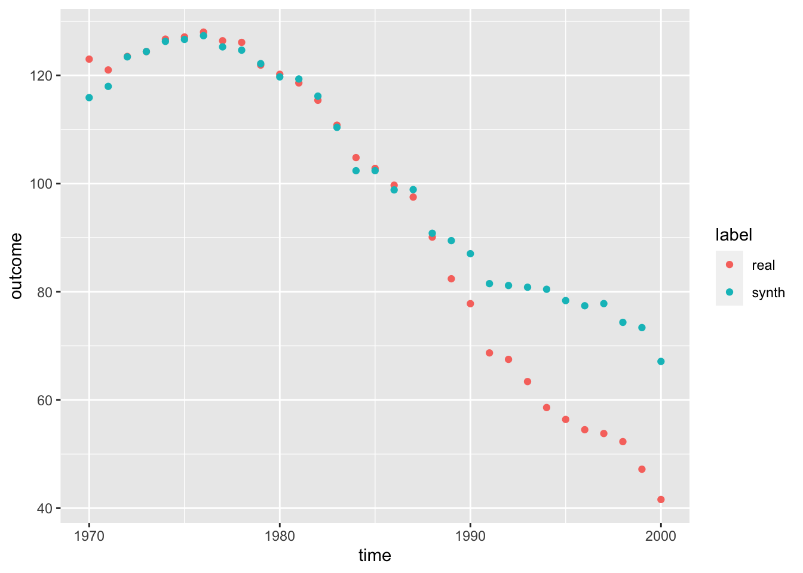
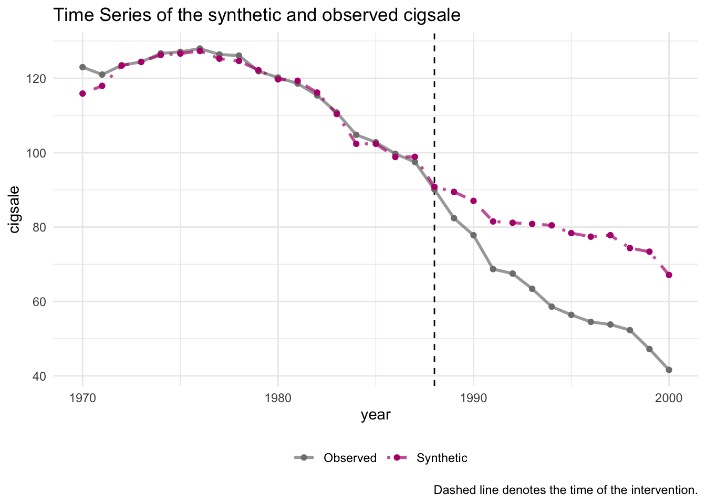
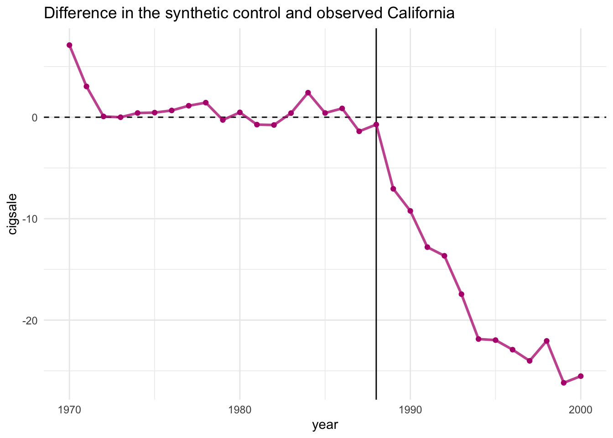
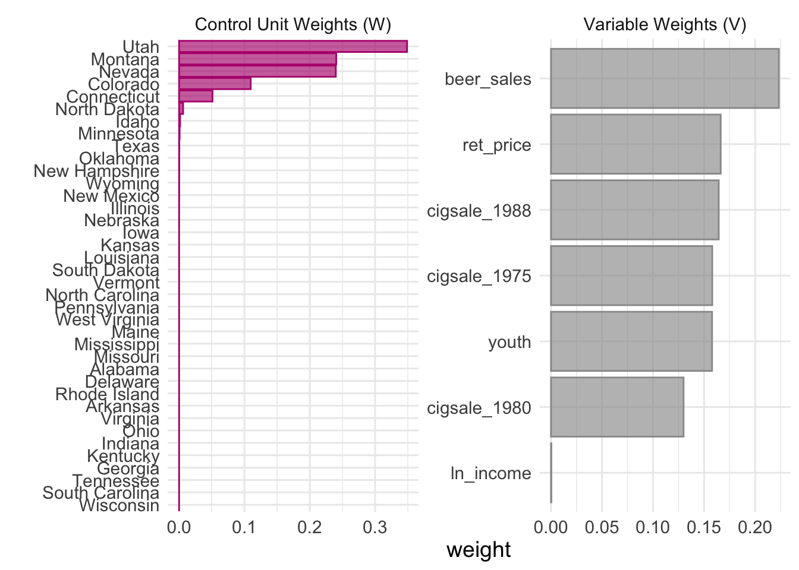
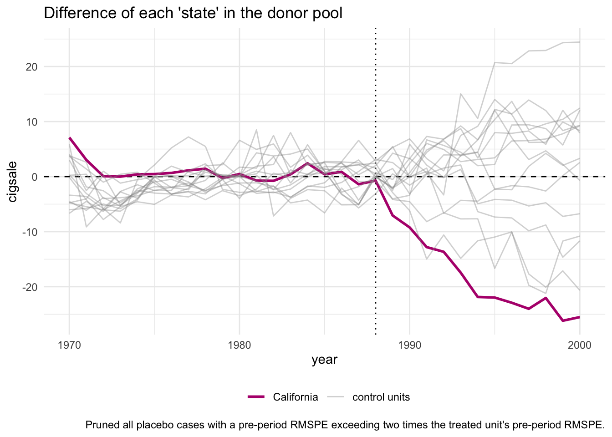
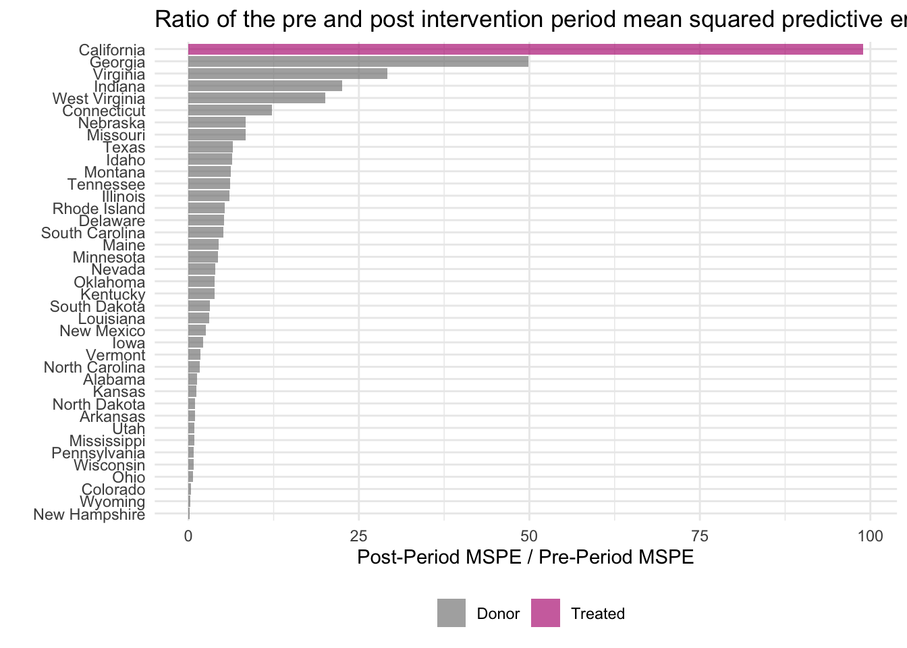

library('tidysynth')10 Синтетический контроль
10.1 Напоминание теории
in progress…
10.2 Пример
data("smoking")
smoking %>% dplyr::glimpse()Rows: 1,209
Columns: 7
$ state <chr> "Rhode Island", "Tennessee", "Indiana", "Nevada", "Louisiana…
$ year <dbl> 1970, 1970, 1970, 1970, 1970, 1970, 1970, 1970, 1970, 1970, …
$ cigsale <dbl> 123.9, 99.8, 134.6, 189.5, 115.9, 108.4, 265.7, 93.8, 100.3,…
$ lnincome <dbl> NA, NA, NA, NA, NA, NA, NA, NA, NA, NA, NA, NA, NA, NA, NA, …
$ beer <dbl> NA, NA, NA, NA, NA, NA, NA, NA, NA, NA, NA, NA, NA, NA, NA, …
$ age15to24 <dbl> 0.1831579, 0.1780438, 0.1765159, 0.1615542, 0.1851852, 0.175…
$ retprice <dbl> 39.3, 39.9, 30.6, 38.9, 34.3, 38.4, 31.4, 37.3, 36.7, 28.8, …smoking_out <- smoking %>%
# initial the synthetic control object
synthetic_control(outcome = cigsale, # outcome
unit = state, # unit index in the panel data
time = year, # time index in the panel data
i_unit = "California", # unit where the intervention occurred
i_time = 1988, # time period when the intervention occurred
generate_placebos=T # generate placebo synthetic controls (for inference)
) %>%
# Generate the aggregate predictors used to fit the weights
# average log income, retail price of cigarettes, and proportion of the
# population between 15 and 24 years of age from 1980 - 1988
generate_predictor(time_window = 1980:1988,
ln_income = mean(lnincome, na.rm = T),
ret_price = mean(retprice, na.rm = T),
youth = mean(age15to24, na.rm = T)) %>%
# average beer consumption in the donor pool from 1984 - 1988
generate_predictor(time_window = 1984:1988,
beer_sales = mean(beer, na.rm = T)) %>%
# Lagged cigarette sales
generate_predictor(time_window = 1975,
cigsale_1975 = cigsale) %>%
generate_predictor(time_window = 1980,
cigsale_1980 = cigsale) %>%
generate_predictor(time_window = 1988,
cigsale_1988 = cigsale) %>%
# Generate the fitted weights for the synthetic control
generate_weights(optimization_window = 1970:1988, # time to use in the optimization task
margin_ipop = .02,sigf_ipop = 7,bound_ipop = 6 # optimizer options
) %>%
# Generate the synthetic control
generate_control()California_treated <- smoking_out[1,]
California_control <- smoking_out[2,]
California_treated_outcome <- California_control$.outcome[[1]]
California_control_outcome <- California_treated$.outcome[[1]]
California <- merge(California_control_outcome, California_treated_outcome, by = 'time_unit')# Потенциальные исходы
California <- smoking_out[1,]
California_outcomes <- California$.synthetic_control[[1]]
# График
California_outcomes <- data.frame(time = c(rep(California_outcomes$time_unit,2)),
outcome = c(California_outcomes$real_y, California_outcomes$synth_y),
label = c(rep('real', 31), rep('synth', 31)))
California_outcomes$label <- as.factor(California_outcomes$label)
library(ggplot2)
ggplot(California_outcomes, aes(x = time, y = outcome, color = label)) +
geom_point()
smoking_out# A tibble: 78 × 11
.id .plac…¹ .type .outcome .predi…² .synth…³ .unit_…⁴ .predi…⁵ .origi…⁶
<chr> <dbl> <chr> <list> <list> <list> <list> <list> <list>
1 Californ… 0 trea… <tibble> <tibble> <tibble> <tibble> <tibble> <tibble>
2 Californ… 0 cont… <tibble> <tibble> <tibble> <tibble> <tibble> <tibble>
3 Rhode Is… 1 trea… <tibble> <tibble> <tibble> <tibble> <tibble> <tibble>
4 Rhode Is… 1 cont… <tibble> <tibble> <tibble> <tibble> <tibble> <tibble>
5 Tennessee 1 trea… <tibble> <tibble> <tibble> <tibble> <tibble> <tibble>
6 Tennessee 1 cont… <tibble> <tibble> <tibble> <tibble> <tibble> <tibble>
7 Indiana 1 trea… <tibble> <tibble> <tibble> <tibble> <tibble> <tibble>
8 Indiana 1 cont… <tibble> <tibble> <tibble> <tibble> <tibble> <tibble>
9 Nevada 1 trea… <tibble> <tibble> <tibble> <tibble> <tibble> <tibble>
10 Nevada 1 cont… <tibble> <tibble> <tibble> <tibble> <tibble> <tibble>
# … with 68 more rows, 2 more variables: .meta <list>, .loss <list>, and
# abbreviated variable names ¹.placebo, ².predictors, ³.synthetic_control,
# ⁴.unit_weights, ⁵.predictor_weights, ⁶.original_datasmoking_out %>% grab_synthetic_control()# A tibble: 31 × 3
time_unit real_y synth_y
<dbl> <dbl> <dbl>
1 1970 123 116.
2 1971 121 118.
3 1972 124. 123.
4 1973 124. 124.
5 1974 127. 126.
6 1975 127. 127.
7 1976 128 127.
8 1977 126. 125.
9 1978 126. 125.
10 1979 122. 122.
# … with 21 more rowsПосле создания синтетического контроля можно легко оценить соответствие, сравнив тенденции синтетического и наблюдаемого временных рядов. Идея состоит в том, что тенденции в период до вмешательства должны быть тесно связаны друг с другом.
smoking_out %>% plot_trends()
Сравните распределения предикторов агрегированного уровня для наблюдаемой единицы вмешательства, синтетического контроля и среднего пула доноров.
smoking_out %>% grab_balance_table()# A tibble: 7 × 4
variable California synthetic_California donor_sample
<chr> <dbl> <dbl> <dbl>
1 ln_income 10.1 9.84 9.83
2 ret_price 89.4 89.4 87.3
3 youth 0.174 0.174 0.173
4 beer_sales 24.3 24.3 23.7
5 cigsale_1975 127. 127. 137.
6 cigsale_1980 120. 120. 138.
7 cigsale_1988 90.1 90.8 114. Чтобы зафиксировать причинную величину (то есть разницу между наблюдаемым и контрфактическим), можно построить различия, используя plot_differences ()
smoking_out %>% plot_differences()
Кроме того, можно легко проверить взвешивание единиц и переменных в подгонке. Это позволяет увидеть, какие случаи были частично использованы для создания синтетического контроля.
smoking_out %>% plot_weights()
smoking_out %>% plot_placebos(prune = FALSE)
smoking_out %>% plot_placebos() # выкидываем с плохой подгонкой
smoking_out %>% plot_mspe_ratio()